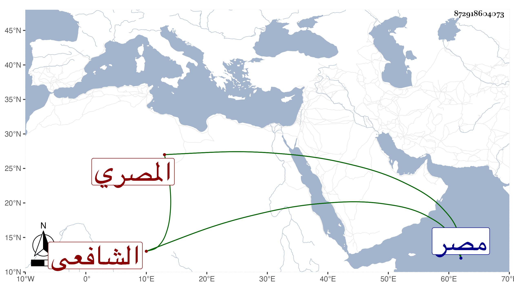

0902Sakhawi.DawLamic.ITO20230111-ara1.EIS1600.872918604073
Biography ID: 872918604073
170
محمد بن أحمد بن محمد بن محمد بن أبي بكر البدر أو الشمس بن الشهاب ابن البدر بن الصدر المصري الشافعي والد علي وأبي بكر الماضيين ويعرف بابن الخلال بمعجمة ثم لام مشددة . ولد في ربيع الأول سنة ست وسبعين وسبعمائة بمصر ونشأ بها فحفظ القرآن والعمدة والتنبيه وألفية النحو وغيرها ، وعرض على البلقيني وابن الملقن والفخر القاياتي وأجازوا له وتلا لأبي عمرو على الشيخ مظفر ثم لنافع وغيره على الجلال ولم ينسبه ، وتفقه بالنورين الأدمي والبكري والشمس بن القطان والبلقيني قرأ عليه في الخروبية وغيرها وقال أنه لازمه عشر سنين ، وقصد الكمال الدميري للأخذ عنه فقال له مكانك بعيد والأولى أن تجمع ما يشكل عليك ثم تراجعني فيه ، وأخذ العربية عن ابن القطان والأدمي وعلم الحديث عن الزين العراقي وعلم الفلك عن ابن ادريس ولازم العز بن جماعة كثيرا ، وأخذ عنه الأصول والعربية والفقه وغيرها وحضر في المنطق عند البساطي وغيره وعرض عليه الشيخ محمد العطار الخلوة فامتنع لكونه حينئذ كان في تفهم كتابه فلما تم حضر إليه والتمسها منه وألح فقال أنه فات الوقت ، وسمع على الصلاح الزفتاوي وناصر الدين بن الفرات والمطرز والأبناسي والعراقي والهيثمي والنجم البالسي والسويداوي والفخر القاياتي والشرف القدسي وآخرين ، وباشر بمصر عدة وظائف ودرس وخطب بمدرسة ابن سويد ثم استدعى لفوة في سنة أربعين وقرر في الخطابة والتدريس بجامع ابن نصر الله بها وتصدى للتدريس والإفتاء فانتفع به غير واحد من أهل تلك الناحية وغيرها ، وناب في القضاء هناك عن السفطي مع امتناعه من قبوله عن من قبله وبعده لمزيد إلحاح المشار إليه عليه فيه ، وقد لقيته بفوة وقرأت عليه أشياء ، وكان فقيها حافظا للمذهب مشاركا في الفنون بارعا في الميقات طارحا للتكلف خيرا متواضعا متقشفا . مات وهو ساجد بفوة في عصر يوم السبت حادي عشر رمضان سنة سبع وستين ودفن من الغد بجوار ضريح أبي النجا بعد أن صلى عليه بالمصلى رحمه الله وإيانا .
